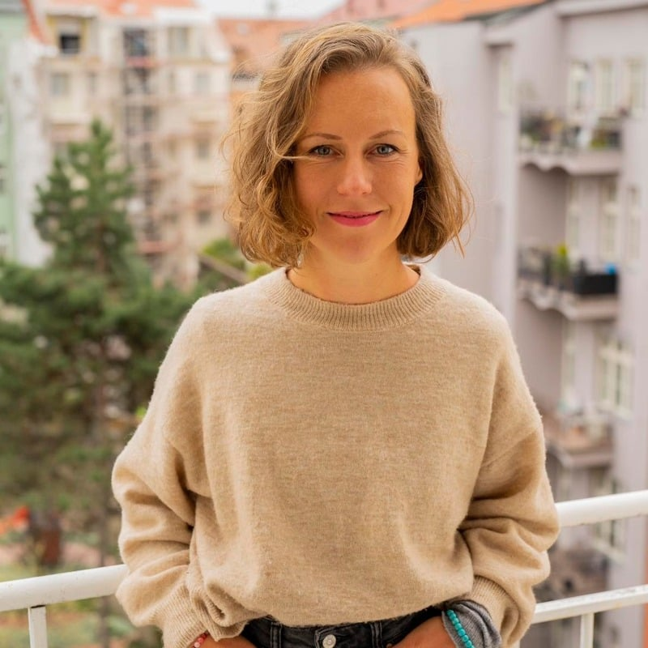

04 — životopis
mgr. tereza
fabiánová
odborné vzdělání a pracovní zkušenosti.

odborné vzdělání
9/2008
— 9/2015
— 9/2015
Filozofická fakulta Univerzity KarlovyObor Psychologie, Mgr. vzdělání
9/2022
— nyní
— nyní
Výcvik integrace v psychoterapii5,5letý komplexní psychoterapeutický výcvik (1026 hodin)
3/2024
— 5/2025
— 5/2025
MBSR Teacher Training programInstitute for Mindfulness Based Approaches, Germany (840 hodin)
1/2025
Psychiatrické minimumMichal Raszka (8 hodin)
4/2024
Psycholog ve zdravotnictvíTeoretická část (40 hodin)
2/2024
— 3/2024
— 3/2024
8-týdenní kurz Happiness HabitsAction for Happiness
3/2022
— 5/2022
— 5/2022
8-týdenní kurz Mindfulness IIICentrum Lávka — Jan Honzík, Slávek Keprt, Marcela Roflíková
9/2020
— 10/2020
— 10/2020
8-týdenní kurz MindfulnessCentrum Lávka, lektor Jan Honzík
2/2019
Workshop Vysnívání a mýtus vztahuProcesově orientovaná práce se vztahovou tématikou (16 hodin) — Institut pro procesově orientovanou práci
2/2017
— 5/2017
— 5/2017
Kurz Telefonická krizová intervenceLinka Bezpečí (140 hodin)
9/2013
— 5/2016
— 5/2016
Individuální psychoterapie99 hodin sebezkušenostní individuální psychoterapie v gestalt přístupu
11/2012
— 4/2013
— 4/2013
Terra — skupinová gestalt psychoterapie60 hodin sebezkušenostní růstové skupiny
pracovní zkušenosti
2/2024
— nyní
— nyní
Terapeutický přístav z.ú.Psychoterapie a mindfulness skupiny
12/2023
— nyní
— nyní
Spolek pro integraci v psychoterapiiPsychoterapeutická konference Mezi běhy
1/2018
— 1/2024
— 1/2024
Rodičovská dovolená
8/2017
— 12/2017
— 12/2017
Konzultant — Linka bezpečíTelefonická krizová intervence pro děti, dospívající a studenty do 26 let
4/2017
— 12/2017
— 12/2017
Soukromá psychologická praxePsychologické poradenství
1/2017
— 6/2017
— 6/2017
Školní psychologZŠ Zruč nad Sázavou — psychologické poradenství pro žáky, učitele a rodiče
1/2016
— 10/2016
— 10/2016
Psycholog — VRÚ Slapy nad VltavouPsychologická diagnostika a poradenství
9/2014
— 5/2015
— 5/2015
Asistent psychologaPsychologická ordinace s.r.o. — diagnostika a administrativní podpora
12/2012
— 8/2014
— 8/2014
Recruitment & methodics specialistCitibank Europe plc — rozvojové a profesní poradenství a diagnostika